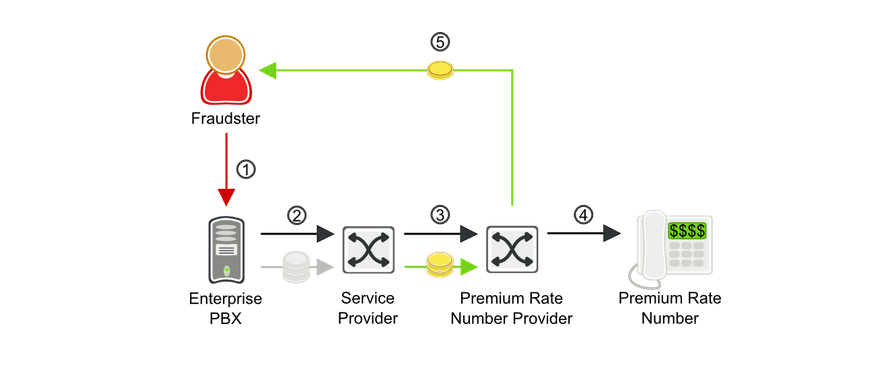
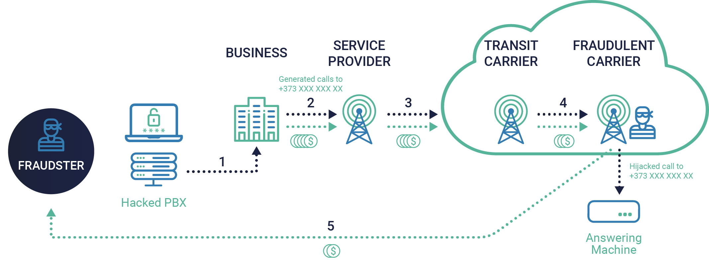

Federal Bureau of InvestigationAgainstPBX Hacker 'Aziz Uddin'

The inside story of most wanted cyber criminal!
On Feb 14, 2015, a Cyber-criminal, who is on the Interpol and the FBI's most wanted list and was involved in defrauding several companies and individuals of over USD 50 million, was arrested from Pakistan's biggest city, Karachi.
According to the FBI website, Aziz Uddin was involved in an international communication scheme and hacking venture that defrauded several companies and individuals, mostly in New Jerzy, of over USD 50 million from November 2008 to April 2012. FBI had also offered a reward of up to USD 50,000 for information that leads to his arrest.

Here is what the hackers did:
They let other people's phones dialed pay-per-minute numbers that they owned, turning their phones into ATMs.
How did they carry out the plan:
● For a phone with remote voicemail access capability, they hack into the phone and change the permanent forwarding number.
● Now the next time anyone dials a phone it will place a new call to the pay-per-minute line.
● A more rewarding method is PBX hacking along with voice-over IP or VOIP phones and Private Branch Exchange (PBX) used in many companies. The hackers find the IP address of insecure PBXs and try to make a call using that PBX.
● They use robo-dialers, dialing hundreds of times a day or thousands of times in a weekend.
Victims contact the police but they aren't equipped to handle international crimes because clls are almost always going to foreign countries. They contact the FBI but the FBI is usually only interested in threats against the government or crimes that were over one million dollars in damages.
Most of this PBX hacking is in the tens of thousands. In 2012 the FBI did receive enough reports about PBX hacking that they began looking at the data.
How It Works?
It's a little bit complicated, so imagine it this way: Someone steals your iPhone. But instead of just selling it on Craigslist, they use it to dial one of those $3-per-minute phone sex lines, over and over, until you've racked up thousands of dollars in fees.
Now, imagine that same person who stole your iPhone actually owns that sex line that he was dialing, and you -- the unsuspecting user -- are forced to pay the bill to your carrier at the end of the month. Unfortunately, if you try to dispute the bill, your carrier will just shrug -- according to the terms of pretty much all user agreements, whoever actually owns the line is on the hook for the bill.
In Uddin's case, the hacked entities were seemingly random businesses. The FBI's official indictment doesn't name specific entities, but it lists examples: One business in Livingston, New Jersey, was hacked for $24,120. Another, in Englewood, New Jersey, was charged $83,839.
The hacks themselves typically lasted for less than a day, usually on a weekend, when no one is in the office.
One might think this type of hacking is relatively fringe -- it's not. Each year, PBX hackers pilfer some $5 billion from U.S. companies, an amount that places their scam in direct competition with stolen-credit-card scams. And despite the fact that it's so massive, and on the rise, few people seem to talk about it. “It's like the ugly stepsister of credit card fraud,” says Shane MacDougall, a well-known cybercrime expert. "There's even people in the security industry that don't know about it.”
*Digital Diary of the scenario by The DARKNET DIARIES
What Is PBX Hacking and How Does It Work?
PBX (Private Branch Exchange) is a private telephone network that handles an organization's internal and external communications. For external connections, the PBX connects to the Public Switched Telephone Network (PSTN) using a Telecommunication Service Provider (TSP) or an Internet Service Provider (ISP).
Hackers target PBX networks in ways that can impact the company. Using the PBX, they might place long-distance calls for free, leaving the company to pay the bills. Hackers might steal data or simply render the network unusable. Such hackers who specialize in hacking phone systems are called phreakers.
PBX hacking was traditionally done on analogue PBX systems using various methods. When IP PBX systems were introduced in the 1990s, hacking methods were adapted to these newer networks. There are many best practices that companies can follow to mitigate the dangers of PBX hacking.
How does PBX system get hacked?
DISA and voice mail are classic ways for phreakers to penetrate the organisation PBX System. Also, DoS acts as one of severe attacks towards the PBX System.
● Brute force attack: It is a trial and error method until the password or log-in credentials or encryption keys.
● DISA and Voice Mails: DISA(Direct Inward System Access) is a service provided by PBX where the user's dials into PBX and then give information for authorisation to use PBX service dial local user. The authorisation process comprises the user's account, user's password and callerID.
● Denial of Service Attack(DoS): The denial of service attack makes telephony service unavailable by causing physical damage or software strategies and denying telephones to place or receive calls. It works by flooding networks with fake traffic or server request generated by machines compromised by viruses and malware.
How to identify if you have become a victim?
There are some indications to notify the victim whether they have been hacked:
● Overload occurring in the incoming and outgoing trunks.
● Sudden change of call patterns mostly the increase in international calls.
● Any kind of lengthy calls or calls to premium rate services during late-night hours or weekends and holidays.
● Any strange messages left in the voicemail boxes.
● Any signs of war dialing like short calls or wrong number calls or any sign of social engineering.
● Any kind leakage found with respect to the business secrets and sensitive data indicating that the phone conversations are intercepted(hacker listened to the phone conversation).
DIY Testing
Now, that you have got a brief knowledge about PBX Hacking. Here is a lesson on how to perform a simple PBX hack.
Legal Data
Legal Aspects of such type of PBX hacks:
1. Challenges in addressing low-level cybercrime
2. Limits of law enforcement
NICE Workforce Framework
The requirements for cybersecurity can vary widely from organization to organization. A role that can be extremely relevant to a specific business may not make sense for a smaller company or even a larger one but that works in another segment.
After going through the whole article here and completing the practical you will get some knowledge and skills that will help you to sort through some work roles which will discuss about your competency in certain aspects.
Below is a list of KS (Knowledge/Skill) provided by NICE Framework which is a part of Workforce Development by NICCS (NATIONAL INITIATIVE FOR CYBERSECURITY CAREERS AND STUDIES) which the reader here could have obtained:
| KSA ID | Knowledge |
|---|---|
| Knowledge | |
| K0001 | Knowledge of computer networking concepts and protocols, and network security methodologies. |
| K0002 | Knowledge of risk management processes (e.g., methods for assessing and mitigating risk). |
| K0003 | Knowledge of laws, regulations, policies, and ethics as they relate to cybersecurity and privacy. |
| K0004 | Knowledge of cybersecurity and privacy principles. |
| K0005 | Knowledge of cyber threats and vulnerabilities. |
| K0006 | Knowledge of specific operational impacts of cybersecurity lapses. |
| K0046 | Knowledge of intrusion detection methodologies and techniques for detecting host and network-based intrusions. |
| K0070 | Knowledge of system and application security threats and vulnerabilities (e.g., buffer overflow, mobile code, cross-site scripting, Procedural Language/Structured Query Language [PL/SQL] and injections, race conditions, covert channel, replay, return-oriented attacks, malicious code). |
| K0107 | Knowledge of Insider Threat investigations, reporting, investigative tools and laws/regulations. |
| K0110 | Knowledge of adversarial tactics, techniques, and procedures. |
| K0114 | Knowledge of electronic devices (e.g., computer systems/components, access control devices, digital cameras, digital scanners, electronic organizers, hard drives, memory cards, modems, network components, networked appliances, networked home control devices, printers, removable storage devices, telephones, copiers, facsimile machines, etc.). |
| K0118 | Knowledge of processes for seizing and preserving digital evidence. |
| K0123 | Knowledge of legal governance related to admissibility (e.g. Rules of Evidence). |
| K0125 | Knowledge of processes for collecting, packaging, transporting, and storing electronic evidence while maintaining chain of custody. |
| K0128 | Knowledge of types and collection of persistent data. |
| K0144 | Knowledge of social dynamics of computer attackers in a global context. |
| K0155 | Knowledge of electronic evidence law. |
| K0156 | Knowledge of legal rules of evidence and court procedure. |
| K0168 | Knowledge of applicable laws, statutes (e.g., in Titles 10, 18, 32, 50 in U.S. Code), Presidential Directives, executive branch guidelines, and/or administrative/criminal legal guidelines and procedures. |
| K0209 | Knowledge of covert communication techniques. |
| K0231 | Knowledge of crisis management protocols, processes, and techniques. |
| K0244 | Knowledge of physical and physiological behaviors that may indicate suspicious or abnormal activity. |
| K0251 | Knowledge of the judicial process, including the presentation of facts and evidence. |
| K0351 | Knowledge of applicable statutes, laws, regulations and policies governing cyber targeting and exploitation. |
| K0624 | Knowledge of Application Security Risks (e.g. Open Web Application Security Project Top 10 list) |
| Skill | |
| S0047 | Skill in preserving evidence integrity according to standard operating procedures or national standards. |
| S0068 | Skill in collecting, processing, packaging, transporting, and storing electronic evidence to avoid alteration, loss, physical damage, or destruction of data. |
| S0072 | Skill in using scientific rules and methods to solve problems. |
| S0086 | Skill in evaluating the trustworthiness of the supplier and/or product. |
Have a Question? Ask Us
We will get back to you